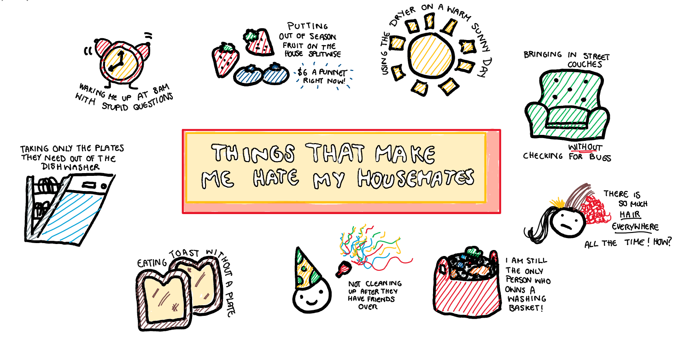
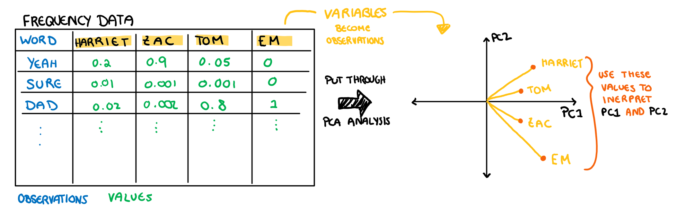
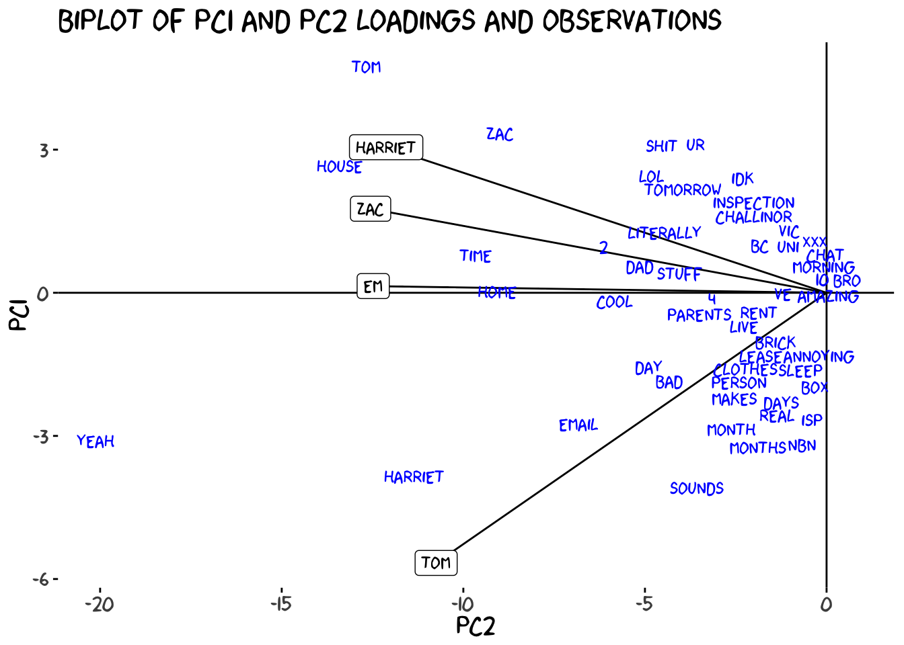

| word | Harriet | Zac | Em | Tom |
|---|---|---|---|---|
| tom | 0.0178 | 0.0171 | 0.0107 | 0.0081 |
| house | 0.0165 | 0.0155 | 0.0135 | 0.0129 |
| zac | 0.0149 | 0.0078 | 0.0088 | 0.0064 |
| em | 0.0127 | 0.0194 | 0.0000 | 0.0081 |
| yeah | 0.0090 | 0.0248 | 0.0334 | 0.0274 |
| time | 0.0091 | 0.0148 | 0.0102 | 0.0113 |
| 2 | 0.0080 | 0.0054 | 0.0088 | 0.0064 |
| shit | 0.0080 | 0.0062 | 0.0060 | 0.0000 |
| stuff | 0.0074 | 0.0023 | 0.0037 | 0.0064 |
| people | 0.0067 | 0.0078 | 0.0042 | 0.0081 |
Using PCA to Bully My Housemates (Specifically Tom)
data visualisation
statistics
machine learning
teaching
Surrounded by Incompetence
I recently moved into a share house with three of my friends, and while we generally get along pretty well, I would be lying if I said I never fantasised about burning the place down with them all in it. Today, after I woke up to the dishwasher run with less that half a load, I made this passive aggressive drawing and sent it to the group chat. I have great conflict resolution skills.

The three people I live with all know me, but none of them know each other, and so as the central housemate, I have often wondered if this clear social dynamic appears in our communication (such as messenger data). This is something that could be easily found through a combination of a principal component analysis (PCA) and violating my housemates privacy. Both of which are enjoyable and straightforward. When PCA was introduced to me in uni, I struggled a bit to understand the plots. So, while I’m violating my housemates privacy, I’m also going to go over the ‘gist’ of PCA and unravel the plots that come with it.
What Is PCA?
The Theory
I would have just jumped into a nice example of understanding the plots, but for the sake of completeness I will explain how PCA works. The idea of PCA is to summarise the “information” of a dataset into its principal components (PCs), and then interpret those instead. These PCs are built to be linear combinations of our variables in their most “interesting” direction. Where “interesting” means the direction of most variance. Think of a linear regression but instead of projecting our results onto a line that uses x to capture as much information as possible about y, we are using both variables trying to capture as much information as possible in the x and y direction that has the most variance. Explaining this with words is a bit difficult, so I have drawn a visualisation of this below.

Following on from this illustration, an easy way to understand principal components is to shift your current understanding of linear regression (I’m assuming you have some current understanding of linear regression). The variable loadings are similar to variable weights in the regression line. We interpret the loadings as “how much that variable contributes to the PC”. Our prediction for a value in linear regression is its projection onto the regression line (with the error shown in the above illustration in red). When working with PCA, our observation’s values are their projection onto the PC line. It is important to note that the red lines in in the PCA drawing is not error, but rather the “remaining” value that will then be used to build the second PC. This is just a quick overview of what these values represent (if you want something more technical look at a textbook or something, this isn’t a maths class). Now, lets take a quick look at the data we are working with.
The Loadings
The Theory
The loadings have two things about their interpretation that make them a bit tricky to understand: 1. We are plotting what would be on the axis of the plot in our typical scatter plot (the variables) as observations 2. We are using these “observations” to understand the axis (our PCs). I have drawn this relationship below for additional clarity.

Note: these aren’t the actual loading values of PC1 and PC2 from the example below, this is just an illustration
To make matters even more complicated, we usually plot our PCA on a biplot with both loadings and observations. We will make and interpret this plot at the end, but since this is an “introduction to understanding PCA plots” we are going to start with only plotting the loadings, and work our way to the biplot.
To interpret our loadings we need to keep three things in mind: 1. The principal components summarise information in descending order of importance. This means that each PC will represent a more overt trend in the data than the PC that follow it. 2. The direction of the PCs is the most important take away. If all your loadings are in the same direction then this PC is analysing the ways in which all your variables are the same. If they move in opposite directions, the PC is identifying a juxtaposition. The actual direction of the loading (positive or negative) doesn’t matter too much outside of the loading’s direction relative to the others. This might seem a bit confusing, it will make more sense once we look at the first loading in the example below. 3. The magnitude of the loading is the least important part. If you start getting so detailed that you are thinking deeply about the magnitude, you are likely overcomplicating the problem for yourself. Just pay attention to the loadings that are significantly different from 0 (I marked these using a red line in the example).You can find your significance line as \frac1{\sqrt{p}} where p is the number of variables in your PCA (in the example it’s 4). As with anything, this will be easier to understand with an example, so lets just look at what the sharehouse PCA produced.
Understanding Observations
The Theory
Understanding the observations is very straight forward once you have the PC interpretations. Usually when analysing our data, the process looks something like this:
For example, a low time in a 100m sprint can be interpreted as fast. Obviously, PC1 does not have an inherent meaning to us in the same way that the time for a 100m sprint does, but that is what the loading interpretations was for. The process for understanding the data plots in PCA is:
So from this we can see that the interpretation of data in PCA vs regular analysis is almost the same, there is just an extra step (which we have already done in our example) that can complicate it a bit. Now that we understand how to interpret the observations in the PCA, let’s apply this to the sharehouse chat data to finish off the analysis.
Sharehouse Chat Observations

How do we interpret these plots? Well we need to use our interpretations of the loadings to understand what our axis represent. Since we established that PC1 represents words we all use, the distance below the line indicates how frequently the word is used between us all. For example, “yeah” and “house” are the most used words across the chat. This makes sense as we are pretty informal and all live together. We can do the same thing for PC2, which identified the ways Tom speaks differently. He uses “nbn” a lot because he is the one who set up the internet. “Tom” is a common word for Zac and I, not only because we love to bully our housemate Tom, but because we also have a few mutual friends (and some not friends) called Tom that we talk about in the chat.
I sent all these plots to the group (I like to keep them informed) and Em said “I’m apparently the only one who laughs in this chat”. Now this brings up an interesting point in how this analysis was run, and it shows how PCA can bring out some patterns that may not be immediately recognisable in the data.
The data cleaning will correct for things like capitalisation (so here Here and HERE are all the same word) but if the words differ by letters (here and herez) thanks to typos or spelling mistakes, they are registered as different words. This creates a problem for registering words that I typically use, since: 1) I’m an absolutely abysmal speller and rarely spell a word the same way twice; and 2) I type laugher according to how funny I think something is (haha vs hahahahahahaha) This means, someone like Zac who almost always laughs in the same way with “lmfao”, or Em with “hahaha” and “hahahaha’, have all their chat laughter collected into one observation. Looking through the records I laugh to a similar degree, but almost all of them are recorded as unique words in the frequency count, and thus don’t make it to the analysis. Tom just never laughs at anything.
Biplot: Putting It All Together
Now these plots only show one principal component each, and also don’t have the loadings on them. I started by separating the elements of the plot, but making several plots when the information could be conveyed with a single plot is tiresome. Now that we understand each of the components by themselves, lets make a biplot to show how this information is usually conveyed all together.

Typically we use the first two principal components when we build the biplot because they contain the most variance, and thus the most information. This final plot is usually how a PCA is presented to us, with the observations and loadings plotted together and each axis representing a principal component. While the plot looks a little different now, the interpretations are still the same, and as a matter of fact understanding the observation is a little easier than before. Since we have the loadings on the plot too, we no longer need to hold the interpretation of the PCs in our mind to understand the observations. On the x axis, the further to the left a word is, the more we all use it, on the y-axis, the further down an observation is, the more Tom specifically uses it. Now we can make analysis of our observations using this combined information, rather than separating it. For example, looking at the biplot we can see that while “tom” is used a LOT in the chat overall, that is largely due to Zac and I, rather than Tom saying his own name.
The biplot allows us to summarise most of the information covered in this post in a single figure, and knowing how to interpret it makes your life much easier. That being said, if you have a lot of loadings you might still need to separate the plots as a biplot can get messy and crowded when we have too many.
Conclusion
While PCA plots can seem confusing at first, once you break them down into their components, they are pretty straight forward to understand. Also Zac said I need to include his twitter handle which is @zaccheus_e so I can direct people to an illiterate and poorly structured rebuttal.